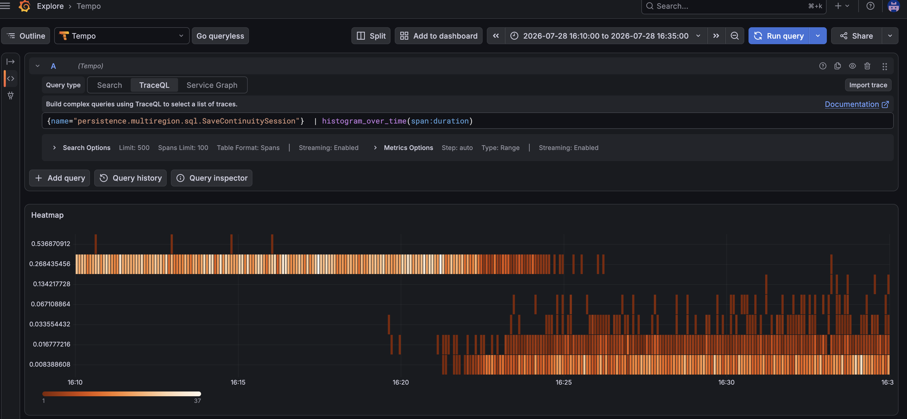
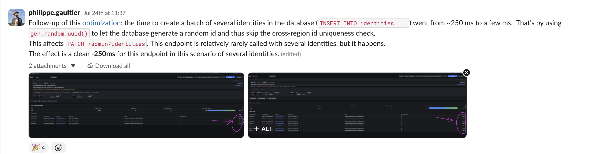

Philippe Gaultier
Philippe Gaultier
Philippe Gaultier
Philippe Gaultier
Published on 2026-09-12. Last modified on 2026-09-12.
This is part 5 of a series of optimization tales using CockroachDB. See part 1, part 2, part 3, part 4.
I am ashamed to say that I discovered this trick very recently. It's so simple and yet powerful, and it yields a 50x speed-up for free.
So here it is: in Kratos, all database ids are UUIDs v4, meaning: 122 random bits1
. And most of our tables are REGIONAL BY ROW, meaning: the data is sharded by region, and we can ensure at the database level that data for an entity (including all of its related data in JOIN tables) is located in one region. Which is fantastic for compliance and regulatory reasons!
Note that we never pick the region ourselves: CockroachDB adds a hidden crdb_region column to such tables, and it defaults to the region of the node handling the query.
Since an id has to be unique (this is the primary key in the table), the naive way to check unicity in a multi-region setup, when INSERT-ing a new entry:
SqlINSERT INTO my_table (id, some_column) VALUES ('d32223a5-34fd-468a-ab43-aef455d16e0c', 'foo');
is to ask each region (in parallel): do you know this (uu)id already? If all of them reply with 'no', then we are good and we can use it for a new entry.
You might be wondering: isn't there a TOCTOU window here? Could a remote region use this ID for an INSERT right after telling us it is not yet used, thus racing with our own INSERT?
Well, thankfully no, due to the isolation (the I in ACID) guarantee: our INSERT runs in an implicit SERIALIZABLE transaction.
When there is a unique constraint on a field in the record, our region issues a read to every remote region in parallel to inspect whether this id already exists.
If a concurrent INSERT with the same id is attempted in a remote region, that region observes a read-write conflict on the same key interval (in this case, the interval is of length 1) and forces the second writer to restart its transaction from the top. Thus, only one transaction, i.e. one write, can win the race and claim this id for itself. The other concurrent write will retry, and ultimately see a unique constraint error.
Important to note: this is a read-write conflict, not a write-write conflict. In CockroachDB, the primary key of a REGIONAL BY ROW table is prefixed with the region.
So if the Europe region wants to insert the same UUID as the Asia region, the two keys are for example:
('eu-west', 'd32223a5-34fd-468a-ab43-aef455d16e0c')('asia-east', 'd32223a5-34fd-468a-ab43-aef455d16e0c')which are two different tuples and thus do not conflict. If CockroachDB did not issue the cross-region read from Europe to Asia for the key ('asia-east', 'd32223a5-34fd-468a-ab43-aef455d16e0c'), which ultimately yields the read-write conflict inside Asia, then there would be no conflict at all, both rows would be inserted, and no one would notice.
All of this yields: when we do an INSERT on a REGIONAL BY ROW table, even if it's just randomly generated values that have no chance of already existing, we wait for all regions to answer, and that takes around 250ms in our setup. Each time. That sucks.
An astute reader may now be asking: well, if this value is 122 random bits1 , there is essentially no chance of collision, it is unique by construction given a good enough random number generator, so why bother asking the other regions, when the answer will be in 99.9999999[...]9999% of the cases: 'this id is unknown to me'?
Indeed, and that's why we use UUIDs (v4) in the first place, for unicity by construction.
The good news is, CRDB developers know that and for this reason, they provide the built-in function gen_random_uuid() which, as you might expect, generates a UUID v4, but more importantly, skips the unique check for this field. That's huge: it means that if there are no other unique constraints on the table, we now can do an INSERT in multi-region mode instantly, without contacting the remote regions at all!
Note that we are taking a (minuscule) risk: if there is indeed, by some massive cosmic bad luck, truly a collision between UUIDs, and the same UUID already exists in another region, we would not notice it. But that chance is so mathematically improbable, that this is a tradeoff we are willing to make. And there is some solace: if the UUID does exist in our local region, we would notice, because the unique check is still performed there (and it's quite cheap).
Our INSERT now becomes:
SqlINSERT INTO my_table (id, some_column) VALUES (gen_random_uuid(), 'foo') RETURNING id;
Since the database now picks the id, we need RETURNING id for the application to know it and be able to use it (if necessary).
So, the best example of this optimization taking place is this change, where a very frequent INSERT went from ~250 ms (typical latency between regions) to ~5ms, simply by moving the UUID generation from the application to the database:

And then I started using it everywhere, and every time, the INSERT went from a stable ~250ms to ~5ms, even when we insert several values at once:

And more. Essentially, if a REGIONAL BY ROW table has no unique constraint, apart from the primary key, which is a UUID, it is eligible for this optimization.
Pretty cool given that it's a trivial, and more importantly, trivially correct, change.
There's one big caveat though: if any other column in the INSERT has a unique constraint, the cross-region check must happen, and this trick buys us nothing.
And finally, if for some reason the application logic and queries cannot be easily modified, CockroachDB offers a setting to turn off unique checks, to achieve the same. But I would not recommend doing that.
Given that I work on a complex, 10-year-old production system with lots of customers and no allowance for downtime, the only optimizations that are acceptable are the ones that:
EXPLAIN ANALYZE) before and after. Before: the plan contains lookup join (semi) on <table> with lookup condition: (crdb_region IN ('europe-west1', 'us-east1', 'us-west1')) AND (column1 = id). After, there is no constraint check anymore.COMMIT will sometimes be very slow because it has to wait for all the pipelined queries to finish), so in my view traces are superior.Otherwise they stay on the cutting room floor. To date I have deployed 40+ optimizations to the production system and all of them had a visible impact, and none of them had to be rolled back. To be honest, my reviewers caught a few doozies before they went out of the door, so thanks to them!
From Wikipedia: "a random version-4 UUID will have six predetermined variant and version bits, leaving 122 bits for the randomly generated part, for a total of 2^122, or 5.3×10^36 (5.3 undecillion) possible version-4, variant-1 UUID".↩
If you enjoy what you're reading, you want to support me, and can afford it: Support me. That allows me to write more cool articles!
This blog is open-source! If you find a problem, please open a Github issue. The content of this blog as well as the code snippets are under the BSD-3 License which I also usually use for all my personal projects. It's basically free for every use but you have to mention me as the original author.
My views are my own and not those of my employer.